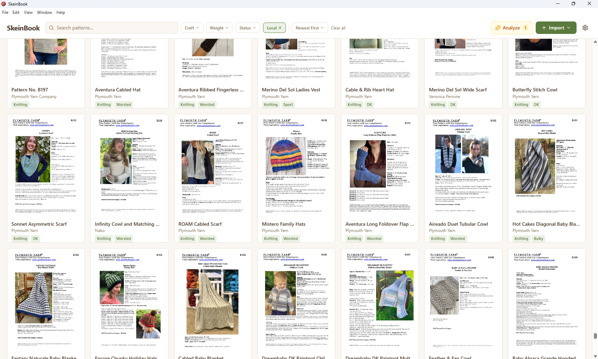

A desktop app for knitters and crocheters who have way too many PDFs. Import, search, and manage your entire pattern library — offline, private, and fast.

Drop in files one at a time or import your entire pattern folder. SkeinBook reads them, generates thumbnails, and indexes everything.
Claude AI reads your patterns and pulls out title, designer, yarn weight, gauge, needle sizes — so you don't have to type it all.
Connect your Ravelry account and pull in your full library. Patterns you already own get linked automatically.
Full-text search plus filters for designer, yarn weight, craft type, tags, and more. Find any pattern instantly.
Export your library to JSON, CSV, or a full ZIP backup. Your data is always yours to keep.
Everything stays on your computer. No cloud accounts required. No tracking. Your patterns, your business.
Enter your beta key to download the latest build.
We store only your email and download count. No tracking, no cookies, no third parties.
Privacy Policy